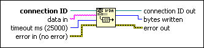
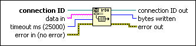

IrDA Write Function
Owning Palette: IrDA Functions
Requires: Base Development System (Windows)
Sends string data to the IrDA connection specified by connection ID.

 Add to the block diagram Add to the block diagram |
 Find on the palette Find on the palette |
Owning Palette: IrDA Functions
Requires: Base Development System (Windows)
Sends string data to the IrDA connection specified by connection ID.

| Add to the block diagram |
Find on the palette |
 |
connection ID is an IrDA connection refnum that uniquely identifies the IrDA connection. |
 |
data in is the data the function writes to an IrDA device. The data must be a string or a flattened string. Use the Flatten To String function to convert any data that is not a string to the string format. You must then use the Unflatten From String function to unflatten the string on the remote computer. You also can use the Flatten To XML function to convert data to XML format. Use one of the following techniques to handle messages that might vary in size:
|
 |
timeout ms specifies the time, in milliseconds, for the function to write bytes to a device before the function completes and returns an error. The default value is 25,000 ms. A value of –1 indicates to wait indefinitely. |
 |
error in describes error conditions that occur before this node runs. This input provides standard error in functionality. |
 |
connection ID out is the IrDA connection refnum that uniquely identifies the IrDA connection. Use this value to refer to this connection in subsequent IrDA function calls. connection ID out always has the same value as connection ID. |
 |
bytes written indicates the number of bytes the function wrote. |
 |
error out contains error information. This output provides standard error out functionality. |
Refer to the following VIs for examples of using the IrDA Write function:
 Open example Find related examples
Open example Find related examples
Open example Find related examples